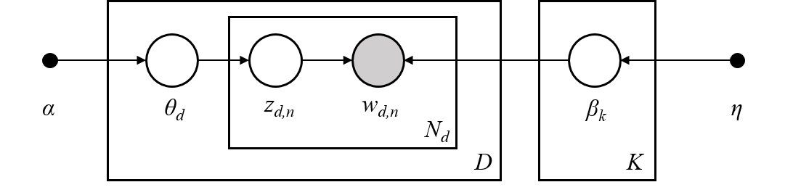

2.5. Descomposición de señales en componentes (problemas de factorización de matrices)¶
2.5.1. Análisis de componentes principales (PCA)¶
2.5.1.1. PCA exacto e interpretación probabilista¶
PCA se utiliza para descomponer un conjunto de datos multivariantes en un conjunto de componentes ortogonales sucesivos que explican una cantidad máxima de la varianza. En scikit-learn, PCA es implementado como un objeto transformador que aprende componentes :math: n en su método fit, y se puede utilizar en nuevos datos para proyectarlos en estos componentes.
PCA centra pero no escala los datos de entrada para cada característica antes de aplicar la SVD. El parámetro opcional whiten=True permite proyectar los datos en el espacio singular mientras se escala cada componente a la varianza unitaria. Esto suele ser útil si los modelos subsiguientes hacen suposiciones firmes sobre la isotropía de la señal: este es el caso, por ejemplo, de las Máquinas de Vectores de Apoyo con el núcleo RBF y el algoritmo de agrupación K-Medias.
A continuación se muestra un ejemplo del conjunto de datos del iris, que se compone de 4 características, proyectadas en las 2 dimensiones que explican la mayor parte de la varianza:
El objeto PCA también proporciona una interpretación probabilística del PCA que puede dar una verosimilitud de los datos basada en la cantidad de varianza que explica. Como tal, implementa un método score que puede utilizarse en la validación cruzada:
2.5.1.2. PCA Incremental¶
El objeto PCA es muy útil, pero tiene ciertas limitaciones para conjuntos de datos grandes. La mayor limitación es que PCA sólo admite el procesamiento por lotes, lo que significa que todos los datos a procesar deben caber en la memoria principal. El objeto IncrementalPCA utiliza una forma diferente de procesamiento y permite realizar cálculos parciales que coinciden casi exactamente con los resultados de PCA mientras se procesan los datos de en mini lotes. IncrementalPCA permite implementar el análisis de componentes principales fuera del núcleo:
Utilizando su método
partial_fiten fragmentos de datos obtenidos secuencialmente desde el disco duro local o de una base de datos en la red.Llamando a su método de ajuste en una matriz dispersa o un archivo mapeado en memoria usando
numpy.memmap.
IncrementalPCA sólo almacena las estimaciones de las varianzas de los componentes y del ruido, con el fin de actualizar la explained_variance_ratio_ de forma incremental. Por ello, el uso de la memoria depende del número de muestras por lote, y no del número de muestras a procesar en el conjunto de datos.
Como en el PCA, el IncrementalPCA centra pero no escala los datos de entrada para cada característica antes de aplicar la SVD.
Ejemplos:
2.5.1.3. PCA usando SVD aleatorio¶
A menudo es interesante proyectar los datos a un espacio de menor dimensión que conserve la mayor parte de la varianza, dejando de lado el vector singular de los componentes asociados a los valores singulares más bajos.
Por ejemplo, si trabajamos con imágenes de 64x64 píxeles de escala de grises para el reconocimiento facial, la dimensionalidad de los datos es de 4096 y se hace lento entrenar una máquina de vectores de soporte RBF en datos tan amplios. Además, sabemos que la dimensionalidad intrínseca de los datos es mucho menor que 4096, ya que todas las imágenes de rostros humanos se parecen en cierto modo. Las muestras se sitúan en una matriz de dimensión mucho menor (por ejemplo, alrededor de 200). El algoritmo PCA puede utilizarse para transformar linealmente los datos y, al mismo tiempo, reducir la dimensionalidad y conservar la mayor parte de la varianza explicada.
La clase PCA utilizada con el parámetro opcional svd_solver='randomized' es muy útil en ese caso: como vamos a descartar la mayoría de los vectores singulares, es mucho más eficiente limitar el cálculo a una estimación aproximada de los vectores singulares que mantendremos para realizar realmente la transformación.
Por ejemplo, a continuación se presentan 16 retratos de muestra (centrados en 0,0) del conjunto de datos Olivetti. En el lado derecho están los primeros 16 vectores singulares transformados en retratos. Dado que sólo necesitamos los 16 primeros vectores singulares de un conjunto de datos con tamaño \(n_{samples} = 400\) y \(n_{features} = 64 \times 64 = 4096\), el tiempo de cálculo es inferior a 1s:
Si observamos \(n_{\max} = \max(n_{\mathrm{samples}}, n_{\mathrm{features}})\) y \(n_{\min} = \min(n_{\mathrm{samples}}, n_{\mathrm{features}})\), la complejidad temporal del PCA aleatorizado es \(O(n_{\max}^2 \cdot n_{\mathrm{components}})\) en lugar de \(O(n_{\max}^2 \cdot n_{\min})\) para el método exacto implementado en PCA.
La huella de memoria del PCA aleatorio también es proporcional a \(2 \cdot n_{\max} en lugar de \cdot n_{\mathrm{components}} en lugar de :math:\) para el método exacto.
Nota: la implementación de inverse_transform en PCA con svd_solver='randomized' no es la transformada inversa exacta de transform incluso cuando whiten=False (por defecto).
Ejemplos:
Referencias:
2.5.1.4. Kernel PCA¶
KernelPCA es una extensión de PCA que obtiene una reducción de la dimensionalidad no lineal mediante el uso de kernels (ver Métricas por pares, afinidades y núcleos). Tiene muchas aplicaciones, incluyendo la eliminación de ruido, la compresión y la predicción estructurada (estimación de la dependencia del núcleo). KernelPCA soporta tanto la transform como la inverse_transform.
Ejemplos:
2.5.1.5. Análisis de componentes principales dispersos (SparsePCA y MiniBatchSparsePCA)¶
SparsePCA es una variante del PCA, cuyo objetivo es extraer el conjunto de componentes dispersos que mejor reconstruyen los datos.
El PCA disperso en mini lotes (MiniBatchSparsePCA) es una variante de SparsePCA que es más rápida pero menos precisa. El aumento de la velocidad se consigue iterando sobre pequeñas porciones del conjunto de características, para un número determinado de iteraciones.
El análisis de componentes principales (PCA) tiene el inconveniente de que los componentes extraídos por este método tienen expresiones exclusivamente densas, es decir, tienen coeficientes distintos de cero cuando se expresan como combinaciones lineales de las variables originales. Esto puede dificultar su interpretación. En muchos casos, los componentes reales subyacentes pueden pensarse más naturalmente como vectores dispersos; por ejemplo, en el reconocimiento de rostros, los componentes podrían asignarse naturalmente a partes de rostros.
Los componentes principales dispersos producen una representación más sencilla e interpretable, destacando claramente cuáles son las características originales que contribuyen a las diferencias entre las muestras.
El siguiente ejemplo ilustra 16 componentes extraídos mediante PCA disperso del conjunto de datos de rostros Olivetti. Se puede observar cómo el término de regularización induce muchos ceros. Además, la estructura natural de los datos hace que los coeficientes no nulos sean verticalmente adyacentes.El modelo no impone esto matemáticamente: cada componente es un vector \(h \in \mathbf{R}^{4096}\), y no hay ninguna noción de adyacencia vertical excepto durante la visualización amigable para el ser humano como imágenes de 64x64 píxeles. El hecho de que los componentes mostrados a continuación aparezcan locales es el efecto de la estructura inherente de los datos, que hace que tales patrones locales minimicen el error de reconstrucción. Existen normas que inducen la dispersión que tienen en cuenta la adyacencia y diferentes tipos de estructura; véase [Jen09] para una revisión de tales métodos. Para más detalles sobre el uso de Sparse PCA, véase la sección Ejemplos, más abajo.
Tenga en cuenta que hay muchas formulaciones diferentes para el problema de Sparse PCA. La implementada aquí se basa en [Mrl09] . El problema de optimización que se resuelve es un problema PCA (diccionario de aprendizaje) con una penalidad \(\ell_1\) sobre los componentes:
La norma \(\ell_1\), que induce la dispersión, también impide el aprendizaje de componentes a partir del ruido cuando se dispone de pocas muestras. El grado de penalidad (y, por tanto, la dispersión) puede ajustarse mediante el hiperparámetro alpha. Los valores pequeños conducen a una factorización ligeramente regularizada, mientras que los valores más grandes reducen muchos coeficientes a cero.
Nota
Aunque se trata de un algoritmo online, la clase MiniBatchSparsePCA no implementa partial_fit porque el algoritmo está en línea en la dirección de las características, no en la dirección de las muestras.
Referencias:
- Mrl09
«Online Dictionary Learning for Sparse Coding» J. Mairal, F. Bach, J. Ponce, G. Sapiro, 2009
- Jen09
«Structured Sparse Principal Component Analysis» R. Jenatton, G. Obozinski, F. Bach, 2009
2.5.2. Descomposición de valor singular truncado y análisis semántico latente¶
TruncatedSVD implementa una variante de la descomposición del valor singular (SVD) que sólo calcula los valores singulares más grandes de \(k\), donde \(k\) es un parámetro especificado por el usuario.
Cuando se aplica la SVD truncada a las matrices término-documento (como las devueltas por CountVectorizer o TfidfVectorizer), esta transformación se conoce como análisis semántico latente (LSA), porque transforma dichas matrices a un espacio «semántico» de baja dimensionalidad. En particular, el LSA es conocido por combatir los efectos de la sinonimia y la polisemia (ambos significan, a grandes rasgos, que hay múltiples significados por palabra), que hacen que las matrices término-documento sean demasiado escasas y muestren una pobre similitud bajo medidas como la similitud del coseno.
Nota
El LSA también se conoce como indexación semántica latente, LSI, aunque estrictamente se refiere a su uso en índices persistentes con fines de recuperación de información.
Matemáticamente, la SVD truncada aplicada a las muestras de entrenamiento \(X\) produce una aproximación de bajo rango \(X\):
Después de esta operación, \(U_k \Sigma_k^\top\) es el conjunto de entrenamiento transformado con características \(k\) (llamadas n_components en la API).
Para transformar también un conjunto de pruebas \(X\), lo multiplicamos por \(V_k\):
Nota
La mayoría de los tratamientos de LSA en el procesamiento de lenguaje natural (PLN) y la literatura de recuperación de información (RI) intercambian los ejes de la matriz \(X\) para que tenga forma n_features × n_samples. Presentamos la LSA de una manera diferente que se ajusta mejor con la API de la scikit-learn, pero los valores singulares encontrados son los mismos.
TruncatedSVD es muy similar a PCA, pero difiere en que la matriz \(X\) no necesita estar centrada. Cuando las medias a nivel de columna (por característica) de \(X\) se restan de los valores de las características, la SVD truncada en la matriz resultante es equivalente a la PCA. En términos prácticos, esto significa que el transformador TruncatedSVD acepta matrices scipy.sparse sin necesidad de densificarlas, ya que la densificación puede llenar la memoria incluso para colecciones de documentos de tamaño medio.
Aunque el transformador TruncatedSVD funciona con cualquier matriz de características, se recomienda su uso con matrices tf-idf en lugar de con recuentos de frecuencias en bruto en un entorno de procesamiento de LSA/documentos. En particular, el escalado sublineal y la frecuencia inversa del documento deberían estar activados (sublinear_tf=True, use_idf=True) para acercar los valores de las características a una Distribución Gaussiana, compensando las suposiciones erróneas de LSA sobre los datos textuales.
Referencias:
Christopher D. Manning, Prabhakar Raghavan and Hinrich Schütze (2008), Introduction to Information Retrieval, Cambridge University Press, chapter 18: Matrix decompositions & latent semantic indexing
2.5.3. Diccionario de aprrendizaje¶
2.5.3.1. Codificación dispersa con un diccionario precalculado¶
El objeto SparseCoder es un estimador que puede utilizarse para transformar las señales en una combinación lineal dispersa de átomos a partir de un diccionario fijo precalculado, como una base wavelet discreta. Por lo tanto, este objeto no implementa un método de fit. La transformación equivale a un problema de codificación dispersa: encontrar una representación de los datos como una combinación lineal del menor número posible de átomos del diccionario. Todas las variaciones del diccionario de aprendizaje implementan los siguientes métodos de transformación, controlables a través del parámetro de inicialización transform_method:
Búsqueda de coincidencias ortogonales (Búsqueda de coincidencias ortogonales (OMP))
Regresión de ángulo mínimo (Regresión de ángulo mínimo)
Lasso calculado por regresión de ángulo mínimo
Lasso usando coordenadas de descenso (Lasso)
Fijar umbrales
La fijación de umbrales es muy rápida pero no produce reconstrucciones precisas. Se ha demostrado su utilidad en la literatura para tareas de clasificación. Para las tareas de reconstrucción de imágenes, la búsqueda de coincidencias ortogonales produce la reconstrucción más precisa y no sesgada.
Los objetos del diccionario de aprendizaje ofrecen, a través del parámetro split_code, la posibilidad de separar los valores positivos y negativos en los resultados de la codificación dispersa. Esto es útil cuando el diccionario de aprendizaje se usa para extraer características que se utilizarán para el aprendizaje supervisado, porque permite que el algoritmo de aprendizaje asigne pesos diferentes a las cargas negativas de un átomo en particular, a partir de la carga positiva correspondiente.
El código dividido para una sola muestra tiene una longitud de 2 * n_components y se construye utilizando la siguiente regla: Primero, se calcula el código regular de longitud n_components. A continuación, las primeras entradas de n_components del split_code se rellenan con la parte positiva del vector de código regular. La segunda mitad del código dividido se rellena con la parte negativa del vector de códigos, sólo que con signo positivo. Por lo tanto, el split_code es no negativo.
2.5.3.2. Diccionario genérico de aprendizaje¶
El diccionario de aprendizaje (DictionaryLearning) es un problema de factorización de matrices que consiste en encontrar un diccionario (normalmente sobrecompleto) que funciona bien en la codificación dispersa de los datos ajustados.
Se sugiere que la representación de los datos como combinaciones dispersas de átomos de un diccionario sobrecompleto es la forma en que funciona la córtex visual primario de los mamíferos. En consecuencia, el diccionario de aprendizaje aplicado a parches de imágenes ha demostrado dar buenos resultados en tareas de procesamiento de imágenes como la finalización, el repintado y la eliminación de ruido, así como en tareas de reconocimiento supervisado.
El diccionario de aprendizaje es un problema de optimización que se resuelve actualizando alternativamente el código disperso, como solución a múltiples problemas de Lasso, considerando el diccionario fijo, y luego actualizando el diccionario para que se ajuste mejor al código disperso.
Después de utilizar este procedimiento para ajustar el diccionario, la transformación es simplemente un paso de codificación dispersa que comparte la misma implementación con todos los objetos del diccionario de aprendizaje(véase Codificación dispersa con un diccionario precalculado).
También es posible restringir el diccionario y/o el código para que sea positivo para que coincida con las restricciones que puedan estar presentes en los datos. A continuación se muestran las caras con diferentes restricciones de positividad aplicadas. El rojo indica valores negativos, el azul indica valores positivos y el blanco representa ceros.
La siguiente imagen muestra el aspecto de un diccionario obtenido a partir de fragmentos de imagen de 4x4 píxeles extraídos de una zona de la imagen de la cara de un mapache.
Referencias:
«Online dictionary learning for sparse coding» J. Mairal, F. Bach, J. Ponce, G. Sapiro, 2009
2.5.3.3. Diccionario de aprendizaje por mini lotes¶
MiniBatchDictionaryLearning implementa una versión más rápida, pero menos precisa, del algoritmo de diccionario de aprendizaje que es más adecuado para conjuntos de datos grandes.
Por defecto, MiniBatchDictionaryLearning divide los datos en mini lotes y los optimiza de forma directa, recorriendo los mini lotes durante el número de iteraciones especificado. Sin embargo, por el momento no implementa una condición de parada.
El estimador también implementa partial_fit, que actualiza el diccionario iterando sólo una vez sobre un mini lote. Esto puede utilizarse para el aprendizaje en línea cuando los datos no están disponibles desde el principio, o para cuando los datos no caben en la memoria.
Análisis de conglomerados para el aprendizaje de diccionario
Ten en cuenta que cuando se utiliza el aprendizaje de diccionario para extraer una representación (por ejemplo, para la codificación dispersa) el análisis de conglomerados o agrupamiento puede ser un buen sustituto para aprender el diccionario. Por ejemplo, el estimador MiniBatchKMeans es computacionalmente eficiente e implementa el aprendizaje en línea con un método partial_fit.
2.5.4. Análisis de factores¶
En el aprendizaje no supervisado sólo tenemos un conjunto de datos \(X = \{x_1, x_2, \dots, x_n \}\). ¿Cómo se puede describir matemáticamente este conjunto de datos? Un modelo muy sencillo de variable latente continua para \(X\) es
El vector \(h_i\) se llama «latente» porque no se observa. \(\epsilon\) se considera un término de ruido distribuido según una Gaussiana con media 0 y covarianza \(\Psi\) (es decir, \(\epsilon \sim \mathcal{N}(0, \Psi)\)), \(\mu\) es algún vector de desplazamiento arbitrario. Este modelo se llama «generativo», ya que describe cómo se genera \(x_i\) a partir de \(h_i\). Si utilizamos todas las \(x_i\) como columnas para formar una matriz \(\mathbf{X}\) y todas las \(h_i\) como columnas de una matriz \(\mathbf{H}\) entonces podemos escribir (con \(\mathbf{M}\) and \(\mathbf{E}\) adecuadamente definidos):
En otras palabras, hemos descompuesto la matriz \(\mathbf{X}\).
Si se da \(h_i\), la ecuación anterior implica automáticamente la siguiente interpretación probabilística:
Para un modelo probabilístico completo necesitamos también una distribución a priori para la variable latente \(h\). La suposición más directa (basada en las buenas propiedades de la distribución Gaussiana) es \(h \sim \mathcal{N}(0, \mathbf{I})\). Esto da como resultado una Gaussiana como distribución marginal de \(x\):
Ahora, sin ninguna otra suposición, la idea de tener una variable latente \(h\) sería superflua, ya que \(x\) puede modelarse completamente con una media y una covarianza. Por ello, necesitamos imponer alguna estructura más específica a uno de estos dos parámetros. Una simple suposición adicional se refiere a la estructura de la covarianza del error \(\Psi\):
\(\Psi = \sigma^2 \mathbf{I}\): Esta suposición conduce al modelo probabilístico de
PCA.\(\Psi = \mathrm{diag}(\psi_1, \psi_2, \dots, \psi_n)\): This model is called
FactorAnalysis, a classical statistical model. The matrix W is sometimes called the «factor loading matrix».
Ambos modelos estiman esencialmente una Gaussiana con una matriz de covarianza de bajo rango. Como ambos modelos son probabilísticos, pueden integrarse en modelos más complejos como, por ejemplo, la Mezcla de Analizadores de Factores. Se obtienen modelos muy diferentes (por ejemplo, FastICA) si se asumen no Gaussianos a priori en las variables latentes.
El análisis factorial puede arrojar componentes similares (las columnas de su matriz de carga) al PCA. Sin embargo, no se puede hacer ninguna afirmación general sobre estos componentes (por ejemplo, sobre si son ortogonales):
La principal ventaja del Análisis Factorial sobre el PCA es que puede modelar la varianza en cada dirección del espacio de entrada de forma independiente (ruido heteroscedástico):
Esto permite una mejor selección del modelo que el PCA probabilístico en presencia de ruido heteroscedástico:
El análisis factorial suele ir seguido de una rotación de los factores (con el parámetro rotation), normalmente para mejorar la interpretabilidad. Por ejemplo, la rotación Varimax maximiza la suma de las varianzas de las cargas al cuadrado, es decir, tiende a producir factores más dispersos, en los que sólo influyen unas pocas características cada uno (la «estructura simple»). Ver por ejemplo, el primer caso a continuación.
2.5.5. Análisis de componentes independientes (ICA)¶
El análisis de componentes independientes separa una señal multivariante en subcomponentes aditivos que son independientes al máximo. Se implementa en scikit-learn utilizando el algoritmo Fast ICA. Normalmente, el ICA no se utiliza para reducir la dimensionalidad, sino para separar las señales superpuestas. Dado que el modelo ICA no incluye un término de ruido, para que el modelo sea correcto se debe aplicar un whitening. Esto puede hacerse internamente usando el argumento whiten o manualmente usando una de las variantes de PCA.
Se utiliza tradicionalmente para separar señales mixtas (un problema conocido como separación ciega de fuentes), como en el ejemplo siguiente:
El ICA también puede utilizarse como otra descomposición no lineal que encuentra componentes con cierta dispersión:
2.5.6. Factorización matricial no negativa (NMF o NNMF)¶
2.5.6.1. NMF con la norma de Frobenius¶
La NMF 1 es un enfoque alternativo a la descomposición que asume que los datos y los componentes son no negativos. La NMF puede utilizarse en lugar del PCA o sus variantes, en los casos en que la matriz de datos no contenga valores negativos. Encuentra una descomposición de las muestras \(X\) en dos matrices \(W\) y \(H\) de elementos no negativos, optimizando la distancia \(d\) entre \(X\) y el producto matricial \(WH\). La función de distancia más utilizada es la norma de Frobenius al cuadrado, que es una extensión obvia de la norma euclidiana a las matrices:
A diferencia del PCA, la representación de un vector se obtiene de forma aditiva, superponiendo los componentes, sin restar. Estos modelos aditivos son eficaces para representar imágenes y textos.
Se ha observado en [Hoyer, 2004] 2 que, cuando se restringe cuidadosamente, la NMF puede producir una representación basada en partes del conjunto de datos, dando lugar a modelos interpretables. El siguiente ejemplo muestra 16 componentes dispersos encontrados por NMF a partir de las imágenes del conjunto de datos de rostros Olivetti, en comparación con las caras propias del PCA.
El atributo init determina el método de inicialización aplicado, que tiene un gran impacto en el rendimiento del método. La NMF implementa el método Descomposición del Valor Singular Doble No Negativo. El NNDSVD 4 se basa en dos procesos SVD, uno aproximando la matriz de datos, el otro aproximando secciones positivas de los factores parciales SVD resultantes, utilizando una propiedad algebraica de las matrices de rango unitario. El algoritmo básico NNDSVD se adapta mejor a la factorización dispersa. Sus variantes NNDSVDa (en la que todos los ceros se ajustan a la media de todos los elementos de los datos), y NNDSVDar (en la que los ceros se fijan a perturbaciones aleatorias menores que la media de los datos dividida por 100) se recomiendan en el caso denso.
Tenga en cuenta que el solucionador de actualización multiplicativa (“mu”) no puede actualizar los ceros presentes en la inicialización, por lo que conduce a resultados más pobres cuando se utiliza conjuntamente con el algoritmo básico NNDSVD que introduce muchos ceros; en este caso, se debe preferir NNDSVDa o NNDSVDar.
La NMF también puede inicializarse con matrices aleatorias no negativas correctamente escaladas estableciendo init="random". También se puede pasar una semilla entera o un RandomState a random_state para controlar la reproducibilidad.
En NMF, se pueden añadir los valores a priori L1 y L2 a la función de pérdida para regularizar el modelo. El valor a priori L2 utiliza la norma de Frobenius, mientras que el valor a priori L1 utiliza una norma L1 elemental. Como en ElasticNet, controlamos la combinación de L1 y L2 con el parámetro l1_ratio (\(\rho\)), y la intensidad de la regularización con el parámetro alpha (\(\alpha\)). Entonces los términos a priori son:
y la función objetivo regularizada es:
La NMF regulariza tanto W como H por defecto. El parámetro regularization permite un control más fino, con el que se puede regularizar sólo W, sólo H, o ambos.
2.5.6.2. NMF con una divergencia beta¶
Como se ha descrito anteriormente, la función de distancia más utilizada es la norma de Frobenius al cuadrado, que es una extensión obvia de la norma Euclidiana a las matrices:
Se pueden utilizar otras funciones de distancia en el NMF como, por ejemplo, la divergencia (generalizada) de Kullback-Leibler (KL), también denominada divergencia I:
O la divergencia Itakura-Saito (IS):
Estas tres distancias son casos especiales de la familia de las divergencias beta, con \(\beta = 2, 1, 0\) respectivamente 6. Las divergencias beta se definen por:
Ten en cuenta que esta definición no es válida si \(\beta \in (0; 1)\), pero puede extenderse continuamente a las definiciones de \(d_{KL}\) y \(d_{IS}\) respectivamente.
La NMF implementa dos solucionadores, utilizando el Descenso de Coordenadas (“cd”) 5, y la Actualización Multiplicativa (“mu”) 6. El solucionador “mu” puede optimizar todas las divergencias beta, incluyendo por supuesto la norma de Frobenius (\(\beta=2\)), la divergencia (generalizada) de Kullback-Leibler (\(\beta=1\)) y la divergencia de Itakura-Saito (\(\beta=0\)). Observa que para \(\beta \in (1; 2)\), el solucionador “mu” es significativamente más rápido que para otros valores de \(beta\). Observa también que con un valor negativo (o 0, es decir, “itakura-saito”) de \(beta\), la matriz de entrada no puede contener valores cero.
El solucionador “cd” sólo puede optimizar la norma de Frobenius. Debido a la no-convexidad subyacente de la NMF, los diferentes solucionadores pueden converger en diferentes mínimos, incluso cuando se optimiza la misma función de distancia.
La NMF se utiliza mejor con el método fit_transform, que devuelve la matriz W. La matriz H se almacena en el modelo ajustado en el atributo components_; el método transform descompondrá una nueva matriz X_new basada en estos componentes almacenados:
>>> import numpy as np
>>> X = np.array([[1, 1], [2, 1], [3, 1.2], [4, 1], [5, 0.8], [6, 1]])
>>> from sklearn.decomposition import NMF
>>> model = NMF(n_components=2, init='random', random_state=0)
>>> W = model.fit_transform(X)
>>> H = model.components_
>>> X_new = np.array([[1, 0], [1, 6.1], [1, 0], [1, 4], [3.2, 1], [0, 4]])
>>> W_new = model.transform(X_new)
Ejemplos:
Referencias:
- 1
«Learning the parts of objects by non-negative matrix factorization» D. Lee, S. Seung, 1999
- 2
«Non-negative Matrix Factorization with Sparseness Constraints» P. Hoyer, 2004
- 4
«SVD based initialization: A head start for nonnegative matrix factorization» C. Boutsidis, E. Gallopoulos, 2008
- 5
«Fast local algorithms for large scale nonnegative matrix and tensor factorizations.» A. Cichocki, A. Phan, 2009
- 6(1,2)
«Algorithms for nonnegative matrix factorization with the beta-divergence» C. Fevotte, J. Idier, 2011
2.5.7. Asignación Latente de Dirichlet (LDA)¶
La Asignación Latente de Dirichlet es un modelo probabilístico generativo para colecciones de conjuntos de datos discretos, como los corpus de texto. También es un modelo temático que se utiliza para descubrir temas abstractos a partir de una colección de documentos.
El modelo gráfico de LDA es un modelo generativo de tres niveles:
Nota sobre las notaciones presentadas en el modelo gráfico anterior, que se puede encontrar en Hoffman et al. (2013):
El corpus es una colección de documentos \(D\).
Un documento es una secuencia de palabras \(N\).
Hay temas \(K\) en el corpus.
Los recuadros representan un muestreo repetido.
En el modelo gráfico, cada nodo es una variable aleatoria y tiene un papel en el proceso generativo. Un nodo sombreado indica una variable observada y un nodo no sombreado indica una variable oculta (latente). En este caso, las palabras del corpus son los únicos datos que observamos. Las variables latentes determinan la mezcla aleatoria de temas en el corpus y la distribución de palabras en los documentos. El objetivo del LDA es utilizar las palabras observadas para inferir la estructura temática oculta.
Cuando se modelan corpus de texto, el modelo asume el siguiente proceso generativo para un corpus con \(D\) documentos y \(K\) temas, con \(K\) correspondiente a n_components en el API:
Para cada tema \(k \in K\), dibujar \(\beta_k \sim \mathrm{Dirichlet}(\eta)\). Esto proporciona una distribución sobre las palabras, es decir, la probabilidad de que una palabra aparezca en el tema \(k\). \(\eta\) corresponde a
topic_word_prior.Para cada documento \(d \in D\), dibujar las proporciones del tema \(\theta_d \sim \mathrm{Dirichlet}(\alpha)\). \(\alpha\) corresponde a
doc_topic_prior.Para cada palabra \(i\) en el documento \(d\):
Dibuja la asignación del tema \(z_{di} \sim \mathrm{Multinomial} (\theta_d)\)
Dibuja la palabra observada \(w_{ij} \sim \mathrm{Multinomial} (\beta_{z_{di}})\)
Para la estimación de los parámetros, la distribución posterior es:
Como la posterior es inabordable, el método bayesiano variacional utiliza una distribución más simple \(q(z,\theta,\beta | \lambda, \phi, \gamma)\) para aproximarla, y esos parámetros variacionales \(lambda\), \(\phi\), \(gamma\) se optimizan para maximizar el Límite Inferior de Evidencia (ELBO):
Maximizar el ELBO es equivalente a minimizar la divergencia de Kullback-Leibler (KL) entre \(q(z,\theta,\beta)\) y la verdadera posterior \(p(z, \theta, \beta |w, \alpha, \eta)\).
LatentDirichletAllocation implementa el algoritmo Bayes variacional en línea y admite métodos de actualización en línea y por lotes. Mientras que el método por lotes actualiza las variables variacionales después de cada paso completo por los datos, el método en línea actualiza las variables variacionales a partir de puntos de datos de mini lotes.
Nota
Aunque se garantiza que el método en línea converge a un punto óptimo local, la calidad del punto óptimo y la velocidad de convergencia pueden depender del tamaño del mini lote y de los atributos relacionados con la configuración de la tasa de aprendizaje.
Cuando se aplica LatentDirichletAllocation a una matriz «documento-término», la matriz se descompone en una matriz «tema-término» y una matriz «documento-tema». Mientras que la matriz «tema-término» se almacena como components_ en el modelo, la matriz «documento-tema» puede calcularse a partir del método transform.
LatentDirichletAllocation también implementa el método partial_fit. Se utiliza cuando los datos pueden obtenerse de forma secuencial.
Ejemplos:
Referencias:
«Latent Dirichlet Allocation» D. Blei, A. Ng, M. Jordan, 2003
«Online Learning for Latent Dirichlet Allocation” M. Hoffman, D. Blei, F. Bach, 2010
«Stochastic Variational Inference» M. Hoffman, D. Blei, C. Wang, J. Paisley, 2013
«The varimax criterion for analytic rotation in factor analysis» H. F. Kaiser, 1958
Revisa también Reducción de Dimensionalidad para la reducción de la dimensionalidad con el Análisis de Componentes de Vecindad.